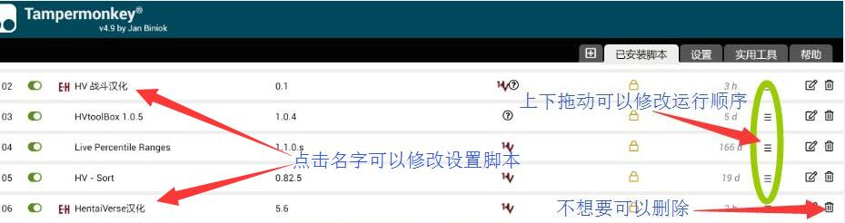

HVTranslate
本文件夹下存放关于Hentaiverse的汉化脚本
仓库地址
如何使用
-
你需要一个脚本管理器，如果你没有的话，根据 这里 第一步提示选择一个适合你浏览器的安装。建议使用Tampermonkey而不要选择Greasemonkey
-
前往 Hentaiverse设置 勾选自定义字体(Use Custom Font), 在字体名称(font-family)框内填上任意字体名称，并拉到最下面点击确认更改(Apply Changes)
- 按照下面脚本说明选择安装需要的脚本
注意：
- 大部分情况下汉化脚本需要运行在其它脚本后面才不会有冲突，简单说的你需要先安装其它脚本再安装汉化
- 先装了汉化脚本导致冲突可以按照最后的管理脚本示例调整，如果你不知道怎么调，删掉汉化再重新安装大概可以解决
脚本说明

当前脚本适配HV 0.88版本（即异世界第二季）
HV 装备物品汉化 v2022.01.27 点击此处安装
- 基于原HV物品汉化脚本修改，汉化Hentaiverse、EH论坛、HVMarket内的物品、装备及装备属性，带装备高亮/装备店隐藏锁定装备
-
如有同时使用其它汉化，需要先于其它汉化脚本安装运行才会生效
-
如果要在论坛买卖装备物品，挑好东西之后务必切换回原文再复制内容，因为别人并不一定看得懂经过翻译过后的东西
- 本脚本大致最初由 ggxxsol 创建，后由贴吧 mbbdzz 修改补充
- 由 indefined 大规模重构，提高了对其它脚本的兼容性及运行效果，但失去原脚本的装备后缀语序倒转功能和物品列表部分悬浮窗说明汉化
- 与HVtoolBox1.0.7以前版本在大部分装备列表冲突会失去装备高亮功能，请更新到新版HVToolBox并将汉化脚本运行顺序放在HVtoolBox后
- 与Live Percentile Ranges在装备详情页冲突，默认不在装备信息页启用，如需包含可在脚本管理器设置中将原始排除添加为用户包含或者将脚本内@exclude改为@include
- 如与其它脚本同时使用冲突，可尝试调整脚本运行顺序，但无法保证完全兼容，或者将冲突的页面链接添加用户排除(@exclude)
Hentaiverse汉化 v2022.01.25 点击此处安装
- 基于贴吧HV界面和其它汉化脚本修改，现已基本完成除了战斗日志之外整个hentaiverse的完全汉化。除了没有装备高亮和不能在论坛使用之外，本脚本完全包含上一个脚本所有汉化内容，可单独使用
- 本脚本大致最初由 dodying 及 ggxxsol 创建，后由 NeedXuyao 和贴吧 mbbdzz 修改整合补充
- 由 indefined 重构添加动态汉化和原文切换功能并补充剩余翻译，SukkaW 重构优化
- 整合HV战斗汉化(仅汉化战斗说明不包含战斗日志)，默认不开启，双击战斗界面下方经验条可开启战斗汉化
- 和HVToolBox1.0.7以前版本在物品仓库中冲突，请更新到新版HVToolBox并将汉化运行顺序放在HVToolBox之后
- 如与Live Percentile Ranges同时使用，需要将脚本运行顺序置于Live Percentile Ranges之后，查询不同品质范围需要切换到英文状态
- 如有其它脚本共同运行冲突也可尝试调整脚本运行顺序，但无法保证全部兼容
HV 战斗汉化
-
HV战斗汉化已完全合并到上方hentaiverse汉化，旧版独立战斗汉化脚本将不再维护
- 战斗汉化仅对战斗说明框进行汉化。旧版独立战斗汉化脚本无原文切换功能，如需关闭汉化请禁用或者删除脚本
-
独立的HV战斗汉化脚本与新版Hentaiverse汉化脚本互斥，同时安装仅先运行的会生效
- 如果你已经安装了新版hentaiverse汉化脚本建议禁用或者删除独立战斗汉化并双击战斗底部经验条开启战斗汉化。
HV 图片按钮汉化 v2021.04.25 点击此处安装
- 仅翻译带功能的按钮图片，也就是在设置中开启自定义字体之后剩下的图片，HV原始图片字体不会被翻译
- 执行逻辑和效率比较奇葩，对不同浏览器的兼容性很难说，建议按照自己需求决定是否安装
- 由于兼容问题不同浏览器之间存在不同执行方式逻辑，有兴趣有一定基础的可以自己读一下代码注释
- 默认不翻译战斗页面图片，如果你使用的是Chrome并且同时安装了新版本的hentaiverse汉化，双击战斗底部经验条会同步开关战斗文字和图片汉化（可能需要刷新）
关于脚本乱码
- 使用上方链接直接在线安装一般不会导致乱码
- 如果你将汉化脚本下载到本地安装，不要将脚本直接拉到浏览器中
- 在脚本管理器中点击新建脚本，或者点击乱码的脚本修改编辑脚本
- 将新建脚本或者乱码的脚本全部内容清空
- 使用记事本打开脚本，复制全部内容粘贴到空脚本编辑窗口中，按Ctrl+S保存
管理脚本示例
如果你在线安装了脚本，或者使用20210404以后版本的脚本，有新版本时正常会收到自动更新
- 注意：如果启用了自动更新那么在编辑器中更改的内容会在下一次自动更新中被覆盖
- 但是设置中更改的内容不会被覆盖
- 如果不想接收新版本更新，参照下方第二张图取消勾选检查更新
以Tampermonkey为例


License
由于本文件夹下脚本经多人修改，本文件夹下脚本不使用主仓库的MIT公开授权